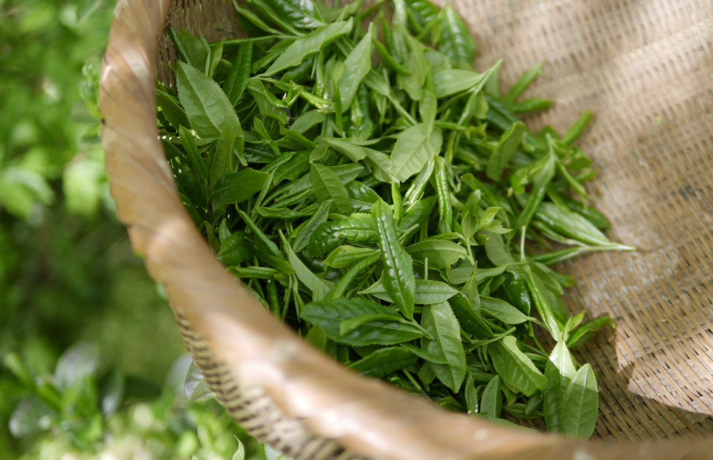

Зеленый чай: научные факты о пользе и вреде напитка

Юлия Цирулева

09 августа 2021
Чай — второй по популярности напиток в мире после воды. Однако 80% продаж приходится на черный чай, хотя полезные свойства зеленого выше. Разбираемся вместе с экспертом, в чем преимущества напитка, кому он подходит и сколько чая можно пить.
Кратко о зеленом чае
- Используется в традиционной индийской и китайской медицине.
- Содержит антиоксиданты, витамины и полезные микроэлементы.
- Помогает нормализовать вес.
- Замедляет старение и улучшает состояние кожи, ногтей и волос.
- Не подходит людям с высоким давлением.
- Используется в профилактике серьезных заболеваний, включая рак.
- Содержит кофеин и может спровоцировать бессонницу.
- Стимулирует работу мозга мягче и безопаснее, чем кофе.
- Обладает мочегонным действием.
- Рекомендуемая норма — не более трех чашек в день.
Общие сведения
Все виды чая, кроме травяных сборов, делают из листьев куста китайской камелии. Тип зависит от степени окисления листьев — зеленый чай не подвергается ферментации (либо этот процесс занимает не более двух дней), а черный обрабатывают от двух недель до месяца. Оба вида полезны для здоровья, но содержат разное количество витаминов и микроэлементов и обладают различными лечебными свойствами.
В 2006 году журнал Американской медицинской ассоциации опубликовал результаты исследования, которое подтвердило связь между употреблением зеленого чая и увеличением продолжительности жизни. Ученые обобщили данные за 11 лет о 40 тыс. японцев в возрасте 40–79 лет. Оказалось, что среди тех участников эксперимента, кто пил пять и более чашек зеленого чая в день, снизился уровень смертности: в целом — на 23% у женщин, на 12% у мужчин; от болезней сердца и сосудов — на 31% у женщин, на 22% у мужчин; от инсульта — на 42% у женщин, на 35% у мужчин.
Другое исследование, которое длилось шесть лет, показало снижение смертности у любителей полезного напитка на 76%.
Причина в компонентах зеленого чая, которые помогают поддерживать здоровье и справляться с опасными заболеваниями. Прежде всего, его листья обладают противовоспалительными свойствами. В традиционной медицине Китая и Индии зеленый чай применяют для снижения температуры, остановки кровотечения, лечения ран, болезней сердца и мозга.
Полезное действие объясняется высоким содержанием полифенолов — мощных природных антиоксидантов. В состав зеленого чая входит особая разновидность этого вещества — катехины. Они связывают и выводят свободные радикалы, которые повреждают клетки и провоцируют болезни и старение организма, тем самым сдерживая воспалительные процессы. В чашке чая объемом 230 мл содержится 20–45% полифенолов, 60–80% которых составляют катехины.
Кроме полифенолов, в состав зеленого чая входят:
- витамины: А и С, витамины группы В — поддерживают здоровье волос, кожи, работу пищеварительной, нервной и кровеносной системы, регулируют уровень сахара в крови, Р — укрепляет сосуды, F — поддерживает здоровье полости рта, витамин К — помогает работе почек и обмену веществ;
- микроэлементы: фтор, кальций (до 5 мг на 1 г чайного листа), цинк, калий (до 20 мг), медь, железо, магний (до 2 мг);
- 20 видов аминокислот, включая гамма-аминомасляную кислоту, которая стимулирует работу мозга, и глютаминовую кислоту, необходимую для восстановления нервной системы;
- алкалоиды: кофеин и L-теанин, который сохраняет тонизирующий эффект кофеина, но смягчает его действие, а также теобромин, который оказывает мочегонное действие и помогает похудеть.
Одна кружка зеленого чая (240 мл) содержит 2,4 кКал.
Польза зеленого чая
- Стимулирует работу мозга
- Зеленый чай помогает замедлить старение
- Ускоряет похудение
- Зеленый чай снижает вероятность развития рака
- Убирает неприятный запах изо рта
- Зеленый чай снижает риск развития диабета второго типа
Как выбрать, заварить и пить чай
Лучше выбирать чаи известных производителей, поскольку в некачественном продукте могут быть примеси — от трухи и трав до вредных веществ. Особенно это касается ароматизированных чаев, в случае с которыми нужно внимательно проверять состав и следить, чтобы все компоненты были натуральными.
Самый полезный чай — листовой. Он стоит дешевле пакетированного, а по качеству намного превосходит его. Определить хороший чай можно по оттенку — цвет листа должен быть равномерным, при этом он может варьироваться от серебристого до темно-зеленого.
Побочные эффекты и риски зеленого чая
Повышенная чувствительность к кофеину или большие дозы чая могут вызвать бессонницу, повышенную тревожность, тошноту, расстройство желудка.
Прием антикоагулянтов — препаратов, разжижающих кровь (например, варфарина), — может быть противопоказанием для употребления зеленого чая.
Прием других стимуляторов — например кофе, энергетических напитков или алкоголя — повышает давление и увеличивает нагрузку на сердце и почки.
Сочетание с лекарствами, другими травами или пищевыми добавками может спровоцировать побочные эффекты.